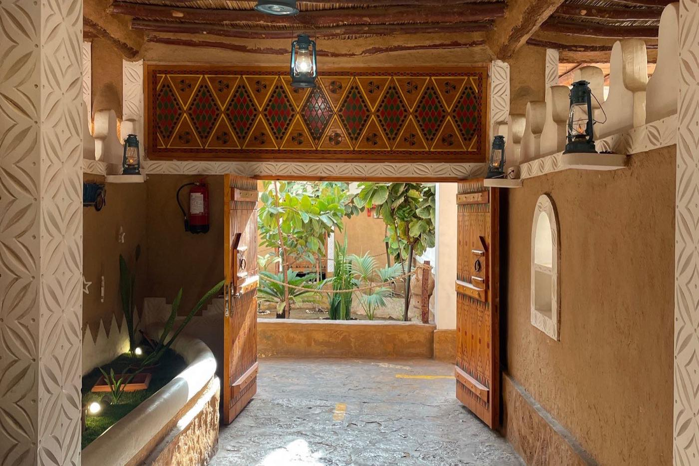
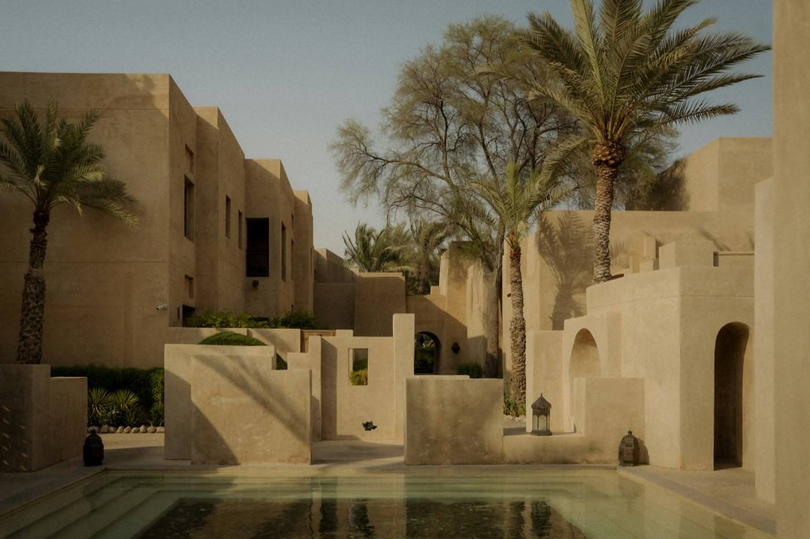
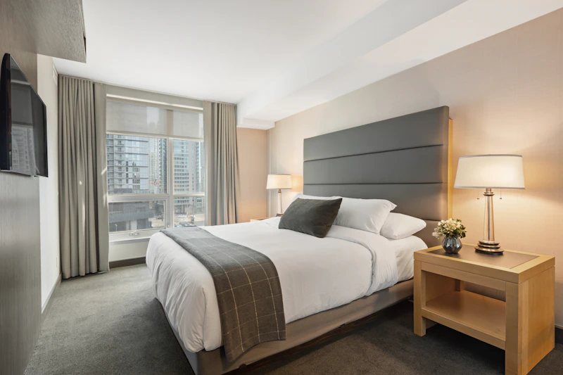

Motion designer et graphiste : sections 2 à 7. Copywriter : sections 1 et 8. Responsable marketing : tout, plus le fichier marketing/ideas-video-motion-design.md pour le calendrier. En cas de doute, la règle est simple : sobre, lumineux, concret. Si un choix n'est pas couvert ici, regarder la landing baitly.fr : elle fait référence.
01 · Vision & positionnement
Faites grandir vos revenus. Pas votre charge de travail.
Baitly est un PMS (logiciel de gestion locative) pour la location courte durée et l'hébergement indépendant. Il réunit dans un seul espace le planning et les canaux de vente, le site de réservation directe, le livret d'accueil, le ménage, les paiements, la conformité et le reporting propriétaire.
Sa différence : une équipe de 10 agents IA qui surveillent l'activité, proposent des actions expliquées et les exécutent sous le contrôle de l'hôte, et une conformité locale native pour trois marchés : l'Arabie saoudite (Shomoos, ZATCA, TVA, riyals, interface arabe et calendrier hégirien), le Maroc (fiche de police DGSN, taxe de séjour, encaissement en dirhams) et la France. Baitly s'adresse aux hôtes indépendants, aux riads et maisons d'hôtes, aux propriétaires d'istirahas et aux conciergeries qui gèrent pour le compte de propriétaires.
Promesse : Baitly prend les coulisses, vous gardez l'accueil. Plus de revenus (prix ajustés, ventes directes, extras), moins de tâches répétitives, et toujours la décision finale.
Cibles
Cible
Ce qu'elle vit
Ce que Baitly lui apporte
Hôte indépendant 1 à 5 logements
Messages à toute heure, calendriers à surveiller, prix fixés au jugé
Un planning unique, des réponses prêtes, des extras vendus automatiquement
Riad, maison d'hôtes Maroc surtout
Fiche de police, encaissement local, accueil multilingue
Fiche DGSN transmise, CMI / PayZone / YouCan Pay, livret AR / FR / EN
Istiraha, chalets Arabie saoudite
Shomoos, ZATCA, TVA, clientèle arabophone
Déclarations et factures conformes, riyals, interface arabe réelle
Conciergerie 5 à 50+ logements
Ménage à contrôler, propriétaires à rassurer, volume
Missions prouvées par photo, relevés et mandats en ligne, agents IA
Cinq valeurs
Hospitalité
L'outil existe pour libérer du temps d'accueil. La photo de lieu et la lumière passent avant la technique.
Contrôle
L'IA propose, l'hôte décide. Bornes, plancher de prix, journal : rien ne se fait dans le dos.
Clarté
Un seul espace, une seule vérité. Des phrases courtes, des états nommés, pas de jargon.
Ancrage local
Les règles, les langues et les paiements de chaque marché, sans bricolage.
Honnêteté
Aucun chiffre inventé, aucune scène fictive présentée comme réelle.
Ton de communication
Accueillant, concret, assuré. Professionnel sans être corporate, chaleureux sans être familier. On vouvoie. On parle bénéfice avant fonctionnalité. Phrases courtes, souvent en deux temps (une affirmation, puis sa conséquence).
Phrases types (issues de la landing)
« Moins d'onglets. Plus de présence. »
« Tous vos calendriers, une seule vérité. »
« Vous approuvez, ils exécutent. »
« Le ménage assigné, prouvé, payé. »
« Une istiraha à Riyad ne se gère pas comme un appartement à Paris. »
Registre
Formel
●●●○○
Chaleureux
●●●●○
Expert
●●●○○
Enthousiaste
●●○○○
Humour
●○○○○
02 · Couleurs
Bleu nuit & Terre cuite.
Toute création Baitly (vidéo, motion design, image, post) se construit sur deux familles : les teintes de bleu nuit, qui posent le fond, le calme et la marque, et la palette « Terre cuite » des briques du planning, qui apporte la chaleur de l'hospitalité et désigne ce qui compte. La lumière (Papier) les sépare. Rien d'autre.
Palette de création · vidéo & image
Bleu nuit · la dominante (60 à 70 % de l'image)
N900
Nuit profonde#0A1120 Ouvertures, scènes de nuit, fonds les plus denses
N800
Nuit#111B31 Fond alternatif, cartes posées sur la nuit profonde
N700
Bleu nuit#1B2A35 Couleur de marque. Fond principal, texte sur clair
N600
Navy#25406E Aplats, CTA en mode Jour, logo sur clair
N500
Ardoise nuit#2E4356 Cartes et panneaux sur fond nuit
N300
Bleu lune#9CB4E2 Filets, icônes, accent froid sur nuit (7,0:1)
N100
Brume nuit#D7E1EE Texte secondaire sur nuit (11,1:1)
Terre cuite · l'accent chaud (20 à 30 %)
T100
Sable#E0C89B Accent n°1 sur nuit : 2e ligne de titre, surlignage, CTA (9,0:1 sur #1B2A35)
T300
Taupe#A89684 Texte tertiaire et détails sur nuit (5,2:1)
T400
Terracotta#B45733 Un seul point d'attention par plan : alerte, curseur, pastille
T500
Terre cuite#9A6C3A Aplats chauds, 2e ligne de titre sur clair (≥ 24 px)
T600
Encre terre#7A5230 Petit texte chaud sur clair (6,6:1)
T800
Brun#5C3A21 Fonds chauds : citations, témoignages
T900
Encre brune#2B211A Texte posé sur Sable (9,7:1)
Lumière : Papier #F7FBFC (fond du mode Jour, texte sur nuit). Jamais de blanc ni de noir purs.
Trois modes de composition
Mode Nuit · par défautMoins d'onglets. Plus de présence.Rejoindre le pré-lancement
Mode Jour · interface, pédagogieLe ménage assigné, prouvé, payé.Réserver une démo
Mode Brun · citation (exemple)« Je garde l'accueil. Baitly garde le reste. »baitly.fr
Règles de création
Chaque visuel = bleu nuit (60–70 %) + Terre cuite (20–30 %) + Papier (≤ 15 % en mode Nuit).
Titre deux tons : 1re ligne Papier (nuit) ou Bleu nuit (jour), 2e ligne Sable (nuit) ou Terre cuite (jour).
Ce qui compte dans le plan (chiffre, mot clé, CTA) est chaud ; le reste est bleu nuit.
Validé / payé / déclaré : coche Sable sur nuit, Terre cuite sur clair. Alerte : Terracotta, une fois par plan.
Fond : aplat ou dégradé très doux Nuit profonde → Bleu nuit (radial, jamais sur du texte).
Étalonnage photo : ombres tirées vers le bleu nuit, hautes lumières vers le sable (lumière de fin de journée, pierre, terre).
Hors palette de création
Bleu-gris, teal, bleu vif, argile, ambre, violet : uniquement à l'intérieur d'une maquette d'interface fidèle, jamais en fond, titre, texte animé ou décor.
Pastilles d'agents multicolores : seulement quand un agent est présenté seul ; en plan d'ensemble, pastilles Sable.
Couleurs de canal (Airbnb, Booking.com…) : on montre le logo, pas la couleur.
Exception unique : les deux « packets » bleu et teal du logo, qui font partie de la marque.
Couleurs d'interface (landing & PMS) · référence pour les maquettes
Les couleurs ci-dessous sont celles du produit. Elles servent à reproduire fidèlement l'interface dans une maquette ou une capture ; elles ne pilotent pas la direction artistique des créations (voir la palette de création ci-dessus).
Fond d'app#E8EEF3 RGB 232 238 243 CMJN 5 2 0 5Fond des écrans du PMS (maquettes).
Discret
Brume foncée#94A7B8 RGB 148 167 184 CMJN 20 9 0 28Icônes inactives, décor. Jamais du texte.
Signaux & flux du logo
Chaque signal existe en deux versions : la teinte vive (pastilles, icônes, aplats, bordures) et son encre (ink) pour le texte. Une teinte vive en texte plafonne autour de 2,2:1 : illisible.
Flux · requête
Bleu requête#2563EB · RGB 37 99 235 CMJN 84 58 0 8Packet « aller » du logo, info, liens UI.
Bleu clair#9CB4E2 RGB 156 180 226Accent et 2e ligne de titre sur fond sombre (7,0:1).
Sombre · flux
Flux sur sombre#60A5FA + #2DD4BF Packets du logo sur fond sombre.
Couleurs des agents IA
Uniquement en pastilles (8 à 12 px) ou en fin liseré d'icône, pour identifier un agent. Jamais en fond, jamais en texte.
Agent
HEX
Agent
HEX
Communication
#3B6FE0
Synchronisation
#3AA0C9
Revenue
#7C5CE0
Conformité
#5E7A99
Opérations
#1F9E8D
Voyageur
#E0685C
Finance
#C77D2E
Propriétaire
#A2845E
Avis & Réputation
#D6457E
Croissance
#5BAE4E
Planning : les briques de réservation (palette « Terre cuite »)
Les briques du planning sont l'élément le plus reconnaissable de l'interface et de nos vidéos. Elles forment la seule famille chaude de l'interface : une gamme de bruns où la densité de la couleur dit la présence du voyageur. Beige : rien n'est encore acquis. Brun : le séjour tient. Brun profond : le voyageur est sur place. Taupe désaturé : le séjour est passé. C'est le statut qui colore la brique, jamais le canal : le canal est indiqué par son logo dans une pastille ronde sur la brique.
AnnuléeBrique « fantôme » : fond transparent hachuré à 135° (gris #67757C à 22 %, trait 1,5 px tous les 8 px), inerte au survol.
Anatomie complète d'une brique, des interventions et des autres éléments du planning : partie « 05 bis · Le planning, pièce par pièce ».
Autres repères du planning
Ménage #2F9E8D (icône balai sur pastille blanche)Maintenance #4F86C6 (icône clé sur pastille blanche)Blocage : bande grisée hachurée #67757CLigne « aujourd'hui » #E5484DColonne week-end #F2F6F7
Couleurs de canal (identification uniquement)
Pour les légendes, filtres, pastilles et graphiques par canal. Jamais comme fond de brique. En vidéo, on montre le logo officiel du canal plutôt que sa couleur.
Proportions d'une création en mode Nuit (le mode Jour inverse Bleu nuit et Papier). Les photos de lieux, chaudes, comptent dans la part Terre cuite. Les couleurs d'interface restent confinées aux maquettes.
Bleu nuit à 45–60 % (dégradé vers le bas), texte Papier sur la zone sombre
≥ 4,5:1 à vérifier
Succès / Attention / Erreur (texte)
#0C7166 / #7A5320 / #93413F
5,7 / 6,5 / 6,6:1
03 · Typographies
Deux familles, une seule voix.
Space Grotesk pour les titres et le wordmark, Manrope pour tout le reste. Tajawal pour l'arabe. Toutes sous licence libre (OFL), fournies dans assets/fonts/ (Tajawal : Google Fonts).
Titres en deux lignes, la 2e en Sable (nuit) ou Terre cuite (jour)
Chiffres tabulaires partout
Césure équilibrée (text-wrap: balance)
Guillemets français « » et espaces insécables avant : ; ! ?
À éviter
Tout en graisse 600 sans contraste de poids
Capitales sur des phrases entières
Texte en dégradé, contours, ombres portées
Autres polices (Inter, Poppins, polices script)
04 · Logo & assets graphiques
Une maison, et ce qui y circule.
Le mark est une maison tracée d'un seul trait continu. Deux « packets » y circulent : un aller bleu (la requête) et un retour teal (la réponse). Ils racontent la synchronisation permanente entre le logement, les canaux et les voyageurs. Le wordmark « baitly » s'écrit en minuscules, en Space Grotesk 600.
Icône seule. Avatars de réseaux sociaux, favicon, filigrane de fin de vidéo.
baitly
Vertical. Écran de fin 9:16, formats carrés centrés.
baitly
Inversé sur Navy. Blanc cassé, sans packets.
Construction & protection
Horizontal : espace entre mark et wordmark = 0,25 × hauteur du mark (14 px pour un mark de 56 px).
Wordmark : hauteur de capitale ≈ 0,57 × hauteur du mark (32 px pour 56 px).
Zone de protection : 0,5 × hauteur du mark sur les quatre côtés, sans texte ni bord de cadre.
Tailles minimales : mark 16 px écran / 5 mm impression ; logo complet 88 px de large écran / 25 mm impression. Sous 24 px, version monochrome.
Le wordmark reste en latin et de gauche à droite, même en arabe.
Ne jamais
Déformer, incliner, ajouter une ombre ou un contour
Remplir la maison, changer l'épaisseur du trait
Recolorer les packets hors des paires définies
Mettre « Baitly » en capitale dans le logo
Poser le logo sur une photo chargée sans voile
Utiliser client/src/assets/Baitly_logo.png (ancien logo) ou tout logo Clenzy
Logo animé (signature de marque)
Dans l'application, le logo n'est jamais figé : le packet bleu parcourt le tracé (1re moitié d'un cycle de 5 s), puis le packet teal revient (2e moitié), en mouvement linéaire. En vidéo, cette animation sert d'ouverture et de signature de fin. Avec « réduire les animations » activé, seul le trait reste.
Photographies



Lieux : architecture d'hospitalité en lumière naturelle (riads, villas, istirahas, chambres prêtes). Lumière chaude, ombres bleu-gris, grain léger. Jamais de rendu 3D ni de photo « banque d'images » posée.
Gestes : le geste du métier (ménage, linge, remise de clés, cuisine) plutôt qu'un pictogramme.
Forme signature : l'arche (coins hauts arrondis à 50 %) est réservée aux photos de lieux. Les photos de gestes et les maquettes UI gardent un rayon de 16 px.
Personnes : dans les maquettes d'interface, l'avatar d'un voyageur montre sa photo, comme dans le produit (portraits de assets/guests/). Scènes générées par IA : mention « Scène illustrative ».
Sources et licences : client/site/assets/photos/sources.json (Unsplash, Pexels).
Icônes
Bibliothèque Lucide, trait 1,7 px, extrémités arrondies, couleur Bleu nuit (Papier ou Bleu lune sur nuit, Sable pour l'icône mise en avant). Taille 20–24 px en interface, 48–64 px en vidéo. Aucun emoji comme icône. Un état n'est jamais porté par la couleur seule : toujours un libellé ou un pictogramme en plus. Logos partenaires (Airbnb, Booking.com, Stripe, PayTabs…) : fichiers officiels de client/site/assets/brands/, en petit, jamais en élément principal.
05 · Composants UI & style d'interface
Épuré, dense quand il le faut, toujours lisible.
Une interface de travail calme : surfaces claires teintées, filets fins plutôt qu'ombres, coins arrondis modérés, une seule action principale par zone. La landing (registre « marque ») est plus aérée ; le PMS (registre « produit ») plus dense. Les maquettes vidéo s'appuient sur le PMS.
Principes
Rayons : 8 px contrôles, 10–14 px cartes, 16 px panneaux, arche pour les photos de lieux
Chiffres tabulaires, alignement à gauche (à droite en arabe)
Interdits d'interface
Bande latérale colorée > 1 px sur une carte
Texte en dégradé, glow néon, glassmorphism décoratif
Trois cartes identiques en rang
Agrandissement (scale) au survol
Tous les boutons en style plein
Boutons
Principal · reposRéserver une démo →SurvolRéserver une démo → fond #456675, ombre teintée, 200 msPresséRéserver une démo →Focus clavierRéserver une démo →DésactivéRéserver une démoSecondaireParler à l'équipeTertiaire / lienDécouvrir le PMS →
Cartes d'agent (composant signature des vidéos)
Revenue
Trois nuits creuses à Marrakech.
Baisse proposée, plancher de 680 MAD respecté.
ApprouverAjusterRefuser
Opérations
Départ tardif accepté.
Le ménage s'est replanifié tout seul.
Conformité
Voyageur enregistré.
Fiche de police au format DGSN, transmise.
Carte : fond #FDFDFE, filet #CAD6DD, rayon 14 px, ombre 0 8 24 px bleu nuit à 8 %. Pastille de couleur de l'agent 10 px. Eyebrow du nom d'agent, titre Space Grotesk 600, détail Ardoise.
Planning : voir la partie « 05 bis · Le planning, pièce par pièce » ci-après.
Champs
vous@exemple.com
salma@riad-nour.ma
salma@riad
Saisissez une adresse email valide.
Pastilles de statut
PayéEn attenteConflitNouveauBrouillon
Fond pastel de la teinte (11–16 %), texte dans l'encre de la teinte. Toujours un mot, jamais la couleur seule.
Modales : réservées aux confirmations irréversibles ; on préfère un panneau latéral ou une carte en place. Tableaux : en-tête Surface, filets 1 px, montants alignés à droite en chiffres tabulaires.
05 bis · Le planning, pièce par pièce
Règles de construction reprises du code
Source : client/src/modules/planning/ (PlanningBar.tsx, PlanningRow.tsx, PlanningBlockedBand.tsx, constants.ts, utils/interventionAttachment.ts, planningUrgency.css). Toute maquette de planning, image ou animation doit respecter ces règles : c'est l'écran le plus montré du produit. Maquette ci-dessous à l'échelle réelle du PMS (rangée 54 px, brique 36 px), vue quinzaine resserrée.
Logement
L12
M13
M14
J15
V16
S17
D18
L19
M20
M21
J22
V23
Riad NourMarrakech
3 nuitsLéa P.+2
6 nuitsSalma 3 400120
Villa PalmeraieMarrakech
5 nuitsJad1 450
Studio GuelizMarrakech
2 nuitsOmar+2
Bloqué
3 nuitsNadia K.
123459678
1Brique de réservation : hauteur 36 px, posée à 9 px du haut d'une rangée de 54 px, rayon 9 px, aplat uni à la couleur du statut (jamais de bande latérale). Avatar rond 26 px avec la photo du voyageur, puis « N nuits » (9,5 px, 600, opacité 85 %) au-dessus du nom (12 px, 600).
2Pilule de prix (21 px, rayon 7, chiffres Space Grotesk 11 px). Réglé : verre translucide + coche (noir 20 % et texte blanc sur brique foncée, blanc 55 % sur brique pâle). Non réglé : fond blanc, montant #B25A2A, icône carte #C9803F.
3Intervention rattachée = à l'intérieur de la brique : pastille blanche 21 × 21, rayon 7, ombre 0 1 2 px, icône colorée (balai ménage #2F9E8D, clé maintenance #4F86C6). Si la brique est large (≥ 184 px) et qu'un tarif existe, la pastille s'élargit en « icône + montant » (texte #15242D).
4Intervention non rattachée = à l'extérieur, posée seule sur la grille à sa date : même carré blanc 21 × 21 rayon 7 avec icône colorée, plus un filet 1 px #D5DEE7, centré verticalement dans la rangée, décalé de 2 px après le début du jour. Jamais de libellé texte, jamais de barre.
5Urgence (paiement en attente ou info voyageur manquante) : anneau pulsé permanent à la couleur de la brique (0 → 8 px, 2,4 s), mouvement « wizz » optionnel toutes les ~4 s. Ici avec une maintenance rattachée (clé).
6Blocage : ce n'est pas un séjour, donc pas une brique. Bande de cellules grisées sur toute la hauteur de la rangée, hachures à 45° (1 px tous les 7 px), cadenas 12 px et libellé « Bloqué » si la place le permet.
7Annulée : brique fantôme, fond clair hachuré à 135°, filet pointillé 1,5 px, texte gris barré, avatar en niveaux de gris, bouton rond « × » (masquer) en haut à droite.
8Aujourd'hui : jour dans un carré 24 × 24 rayon 8 à l'encre de marque (Navy), ligne verticale 2 px #E5484D sur toute la hauteur avec un point de 10 px et halo. Week-end : en-tête #F2F6F7, cellules #F8FAFB.
9Repli « +N » : quand la brique manque de place, le nom du voyageur prime ; se replient dans une pastille « +N » (blanc 90 %, 10 px gras), dans l'ordre : pastilles d'intervention, logo du canal, puis prix ; l'avatar part en dernier (sous 90 px de large).
Quand une intervention est-elle « rattachée » ?
Règle unique du code : chaque ménage ou maintenance suit un seul chemin. Il est dessiné dans la brique de la réservation qu'il sert si l'une de ces conditions est vraie, dans cet ordre :
lien explicite vers une réservation active du même logement ;
sa date tombe entre l'arrivée et le départ d'un séjour (le jour de départ, c'est le séjour qui se termine qui gagne) ;
il suit un départ, avant que le séjour suivant ait commencé (ménage de rotation) ;
il précède une arrivée de 3 jours au plus (ménage anticipé).
Sinon, il est orphelin et posé seul à sa date (pastille à filet, repère 4). Si la brique hôte est masquée (filtre, hors période), l'intervention redevient autonome.
Géométrie et états
À l'heure : une brique commence à l'heure d'arrivée (15 h par défaut) et finit à l'heure de départ (11 h). Les jours de rotation laissent donc un vide entre deux briques ; largeur minimale ½ jour.
Colonne logements 188 px (nom + ville). En-tête des jours 44 px.
Survol : la brique monte de 1 px avec une ombre portée douce.
Sélection : double anneau (2 px fond de carte + 2 px accent terracotta #B45733) et léger « pop ».
Conflit : anneau 2 px #C97A7A qui pulse (2 s).
Brique trop étroite : les alertes deviennent un point radar de 10 px qui pulse au coin (ambre #C28A52 info manquante, #C97A7A paiement).
Pied de grille : taux d'occupation par jour (10 px, chiffres tabulaires).
En mode sombre : mêmes briques (« Sur place » passe à #6B4527) ; les pastilles restent blanches.
En motion design
Les briques entrent par glissement horizontal depuis leur heure d'arrivée, une rangée après l'autre (jamais par zoom ni rebond fort).
Un ménage lié apparaît comme pastille dans la brique (fondu + léger « pop » 150 ms), il ne glisse jamais comme une brique séparée. Un départ tardif allonge la brique jusqu'à la nouvelle heure de départ ; la pastille ménage suit.
Un statut qui change (en attente → confirmée → sur place → partie) est un fondu de couleur de la brique (300 ms), jamais une animation de forme.
Une seule brique en urgence à la fois dans un plan ; l'anneau pulse à la couleur de la brique.
06 · Principes de motion design
Calme, précis, jamais gadget.
Le mouvement explique, il ne décore pas. Il reproduit le comportement de l'interface Baitly : des éléments qui glissent courts et se posent en douceur, un rythme posé, des accélérations réservées aux moments de « problème ».
Courbe d'easing signature
ease-out-quint cubic-bezier(0.22, 1, 0.36, 1) After Effects : vitesse d'entrée 0 %, influence de sortie 85–90 % (« easy ease out » marqué).
Sorties : cubic-bezier(0.64, 0, 0.78, 0) (ease-in), plus courtes que les entrées. Jamais de rebond élastique ; un rebond de 4–8 px maximum pour un « drop » d'élément.
Durées types
Micro-interaction (clic, coche, survol)
150–200 ms
Entrée d'un élément (carte, texte)
300–500 ms
Décalage entre éléments (stagger)
60–180 ms
Transition de scène
600–800 ms
Tracé du logo
1,0–1,2 s
Cycle des packets du logo
5 s, linéaire
Temps de lecture d'un titre
≥ 1,5 s + 0,3 s / mot
Texte, chiffres et CTA en mouvement
Titres : apparition mot à mot (décalage 60 ms) ou ligne à ligne, glissé vertical court de 16–24 px + fondu. La 2e ligne (Sable sur nuit, Terre cuite sur clair) arrive 150 ms après la 1re.
Chiffres : en Sable sur nuit, Terre cuite sur clair ; compteur qui roule en chiffres tabulaires (la largeur ne bouge pas), 600–900 ms, ease-out. Pas de chiffre qui clignote.
Surlignage : fond Sable #E0C89B (texte Encre brune) qui se dessine de gauche à droite derrière le mot (de droite à gauche en arabe), 300 ms.
CTA : le bouton entre en dernier, se pose, puis une seule micro-réaction (Sable qui s'éclaircit vers Papier en 200 ms sur nuit ; Navy qui passe à Bleu nuit sur clair). Il reste à l'écran ≥ 2 s.
Interface : les éléments d'UI bougent comme dans le produit (glissements, fondus). Pas de rotation 3D, pas de perspective, pas de zoom caméra rapide.
Séquences types
Intro (2–3 s)
0–0,4 s · fond Papier
0,4–1,6 s · tracé de la maison au trait
1,6–2,2 s · wordmark en fondu + glissé
2,2–3 s · baseline
Baseline : « L'hospitalité, augmentée. » ou la promesse du jour. Musique : attaque douce, pas de « whoosh ».
Transition entre deux features (0,7 s)
Le tracé de la maison traverse l'écran porté par le packet bleu ; il balaie l'ancienne scène et révèle la suivante. Variante sobre : fondu enchaîné 400 ms + glissé de 24 px. Chaque chapitre porte son numéro « 01 / VERBE ».
Outro avec CTA (3–4 s)
0–0,8 s · titre promesse
0,8–1,6 s · logo + packets en cycle
1,6–2,2 s · bouton CTA
2,2–4 s · maintien + URL baitly.fr
Cohérent avec Baitly
Une idée par plan, beaucoup d'air
Contraste de rythme : tension rapide, puis calme
Maquettes fidèles au produit
Photos de lieux en arche, lumière naturelle
Sous-titres incrustés, lisibles sans le son
Version sans animation lisible (réduction des mouvements)
Clignotements, urgence en rouge, sons de notifications de marques tierces
07 · Templates de contenus sociaux
Cinq gabarits, toutes les campagnes.
Spécifications détaillées et exemples de copy dans marketing/templates-socials/templates-socials.md. Ci-dessous : l'essentiel pour construire les gabarits.
zone app
01 / VERBE Titre deux tons
UI / photo
sous-titres
zone app
A · Reel / TikTok 1080×1920 · 15–30 s
▲ logo
Titre ligne 1 Titre ligne 2
CTA
photo
B · Post promesse 1080×1080
Hook slide 1 / 7
● ○ ○ ○ ○ ○ ○
C · Carrousel 1080×1350 · 5–7 slides
01 / VERBE · titre
UI 60 %
texte 40 %
sous-titres
D · Explication 1920×1080 · 45–120 s
Règle
Valeur
Marges de sécurité
64 px (1:1, 4:5, 16:9) · 9:16 : 250 px en haut, 380 px en bas, 64 px sur les côtés
Logo
Une occurrence, en haut à gauche ou dans l'écran de fin ; mark 56–72 px
Fond
Mode Nuit (#1B2A35, #111B31) par défaut ; Jour (Papier) pour la pédagogie d'interface ; Brun (#5C3A21) pour les citations
Titre
Space Grotesk 700, 2 lignes max, 2e ligne Sable (nuit) ou Terre cuite (jour)
CTA
Nuit : bouton Sable, texte Encre brune · Jour : bouton Navy, texte Papier · rayon 8 px ; URL baitly.fr toujours écrite
Template E · Story compte à rebours
1080×1920, fond Bleu nuit, grand chiffre 280 px, sticker lien
Exemples de copy
Titres
« Le départ tardif vendu pendant que vous dormiez. »
« Moins d'onglets. Plus de présence. »
« Une réservation ici. Les dates fermées partout. »
Descriptions
« Dix agents IA préparent, proposent et exécutent. Vous gardez la décision. »
« Un code par séjour, valable du check-in au départ. Pas avant, pas après. »
« Airbnb, Booking.com, votre site : tous vos calendriers disent enfin la même chose. »
Adapter à une campagne
Campagne
Gabarits
Ce qui varie
Feature spotlight
A, D
Numéro de chapitre, maquette, pastille de l'agent concerné
Témoignage / cas d'usage
A, C
Photo du lieu, citation entre « » ; « Scène illustrative » si fictif ; accord écrit si réel
Offre / lancement
B, E
Titre, CTA, durée ; l'urgence passe par le chiffre, pas par le rouge
Marché arabophone
Tous
Mise en page en miroir, Tajawal, devise locale ; le wordmark reste latin
08 · Voix off & storytelling
Professionnel, mais chaleureux.
La voix Baitly parle comme une collègue expérimentée de l'hôtellerie : elle connaît le métier, elle ne vend pas à tout prix, elle rassure par la précision.
Casting & direction
30–45 ans, timbre posé, sourire audible
Débit : 2 à 2,4 mots par seconde (≈ 70 mots pour 30 s)
Français standard ; arabe standard moderne avec prononciation du Golfe pour l'Arabie saoudite ; adaptation marocaine possible
Pas d'effets de voix, pas de ton « bande-annonce »
Une voix de référence par langue, gardée sur toute la série
Structure d'un message
Hook
0–3 s
Une situation vécue, une heure, une question
Problème
3–10 s
La douleur concrète, sans dramatiser
Solution
10–20 s
Ce que fait Baitly, en bénéfice
Preuve
20–26 s
Un fait produit vérifiable, montré à l'écran
CTA
26–30 s
Une seule action + URL
Prononciation du nom
Baitly se prononce « Bètly » (bèt-li), jamais « ba-ït-li ». L'adresse se dit « bètly point F R ». En arabe, la marque s'écrit « بيتلي » (jamais « بايتلي »). Pour une synthèse vocale qui hésite, écrire « Bètli » dans le texte envoyé à l'outil ; le nom affiché à l'écran reste « Baitly ».
Formulations
À privilégier
À éviter
« Vous approuvez, ils exécutent. »
« L'IA gère tout pour vous. »
« Les disponibilités sont centralisées pour limiter les conflits. »
« Zéro double réservation garanti. »
« Jamais sous le plancher que vous fixez. »
« Maximisez vos revenus de 30 % ! » (chiffre non mesuré)
« Un simple lien, pas d'application. »
« Une expérience digitale seamless et disruptive. »
N'utiliser que des faits vérifiables dans le produit (10 agents, 0 % de commission Baitly sur le direct, 3 langues, 3 marchés, bornes du yield 55 % / 85 %, repos de 14 jours, code valable du check-in au départ, preuve photo avant paiement).
Tout gain chiffré (heures, revenus, taux) doit être mesuré et sourcé avant publication.
Cas client fictif : mention « Scène illustrative » visible. Cas réel : accord écrit du client.
Montants d'exemple : reprendre ceux de la landing (680 MAD, 150 MAD, 4 800 MAD, 450 SAR) et les présenter comme exemples.
Fidélité des maquettes UI, fonctionnalités annoncées
[Nom · email]
Référent arabe
Adaptation AR, voix off AR, conformité saoudienne
[Nom · email]
A4 · Notes & hypothèses
Couleurs : la landing définit ses couleurs en OKLCH (client/src/theme/baitly-brand.css) ; les HEX de ce document en sont les conversions sRGB. Les CMJN sont des conversions mathématiques non calibrées : faire une épreuve avant toute impression.
Palette de création : sur décision du 26 septembre 2026, vidéos et images se construisent sur les teintes de bleu nuit et la palette Terre cuite des briques du planning (planningUrgency.css). Le PMS porte aussi un accent d'action terracotta (#B45733, couche « Signature ») : il est intégré comme T400, réservé à un seul point d'attention par plan. Les autres couleurs d'interface (bleu-gris de la landing, teal, couleurs d'agents et de canaux) restent confinées aux maquettes. Ardoise nuit (#2E4356) et Bleu lune (#9CB4E2) viennent de la bibliothèque Baitly UI (survol primaire, thème sombre).
Packets du logo : le code utilise plusieurs paires selon le contexte (bleu / teal, bleu / ambre, bleu clair / jaune). Pour la communication, nous figeons : fond clair #2563EB / #0D9488, fond sombre #60A5FA / #2DD4BF. Le fichier client/src/assets/logo/baitly-mark.svg utilise un trait #6B8A9A et un teal #14B8A6 : acceptable, mais la version de référence est celle de ce document (trait Navy).
Logo haute définition : pas de fichier vectoriel « logo complet » (mark + wordmark) dans le dépôt ; le wordmark est composé en police. Un export SVG / PDF vectorisé est à produire (voir assets/baitly-mark.svg pour le mark).
Polices : la landing utilise Manrope (corps) et Space Grotesk (titres) ; le PMS utilise Plus Jakarta Sans (corps) et Space Grotesk. Pour la communication, Manrope est retenue comme police de corps unique (plus proche de la landing, qui est la vitrine).
Phase produit : la landing est en pré-lancement ; les CTA sont donc « Rejoindre le pré-lancement ». Le formulaire de /demo n'était pas branché au 19 septembre 2026 (client/site/BAITLY-LANDING.md) : à vérifier avant toute campagne vers cette page.
Handles sociaux, démo, contacts : absents du dépôt, laissés en placeholders.
Aucun chiffre de performance : la landing les a retirés faute de mesure ; ce document fait de même.
Nom : le produit est renommé Clenzy → Baitly. Les identifiants techniques (dépôt, domaines internes) gardent « clenzy » : ne jamais les montrer dans une création.